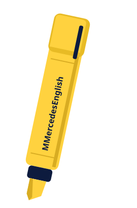

Primero, el sentido.
Ves la expresión dentro de una situación concreta. Así sabes qué comunica.
Good morning. Un saludo para la mañana.
Inglés para jóvenes y adultos
Desde Venezuela, para hispanohablantesClases en vivo por Zoom, con explicaciones claras, material visual y práctica de gramática, pronunciación, comprensión auditiva y escritura adaptada a tu nivel.
09:00 a. m.
Llegas a clase.
Good
morning.
Buenos días.

La forma MMercedesEnglish
Una explicación clara prepara el siguiente paso. Después llega tu oportunidad de practicar.
Pruébalo túVes la expresión dentro de una situación concreta. Así sabes qué comunica.
Good morning. Un saludo para la mañana.
Eliges una frase y compruebas por qué encaja con la situación.
Llegas a clase por la mañana.¿Cómo saludarías a tu profesora?
Llevas la expresión a una conversación que podrías tener en tu día a día.
Good morning, Ana.How are you?
Repasas, identificas tus dudas y construyes nuevas frases sobre una base que ya comprendes.
Una pequeña práctica
Son las nueve de la mañana. Llegas a clase y quieres decir «Buenos días» a tu profesora.
Elige una opción y lee la explicación. Puedes volver a intentarlo.
Good morning: buenos días.
Good evening: saludo de la tarde-noche.
Good night: despedida nocturna o antes de dormir.
Clases para tus objetivos
Puedes empezar desde cero, retomar lo que estudiaste o seguir avanzando. En una entrevista inicial identificamos tu nivel y tus objetivos.
En vivo por Zoom, con práctica adaptada a tu nivel.
USD 40al mes
También puedes pagar en dos cuotas quincenales de USD 20. El primer pago se realiza antes de comenzar.
Consultar clases individuales (abre WhatsApp en otra pestaña)Grupos pequeños de 3 a 4 participantes, según su nivel.
USD 25al mes por persona
También puedes pagar en dos cuotas quincenales de USD 12,5 por persona. El primer pago se realiza antes de comenzar.
Consultar el próximo grupo (abre WhatsApp en otra pestaña)Tarifas para todos los niveles de inglés general. Puedes pagar en divisas o en bolívares al tipo de cambio del BCV. Consulta pagos y condiciones.
Para seguir practicando
Consulta una estructura, repasa una idea o vuelve a intentarlo. Estos recursos te acompañan fuera de clase.
Detrás de MMercedesEnglish
Mercedes
Profesora de inglés.
Claridad, contexto y práctica.
Soy Mercedes, profesora de inglés y creadora de MMercedesEnglish. Ayudo a hispanohablantes a comprender el inglés mediante explicaciones claras, ejemplos cotidianos y materiales visuales.
Mi enfoque conecta cada tema con situaciones en las que puedes usar lo aprendido.
Soy TSU en Idiomas Modernos, Inglés e Italiano (IUTAV), y tengo un Diplomado en Traducción (IUTAV–UCV).
También soy TSU en Comercio Internacional por la USB, una formación que complementa mi trabajo con el inglés para contextos laborales.
Voces de la comunidad
Comentarios reales sobre las clases y el contenido de MMercedesEnglish, publicados en Instagram.
100% recomendada la profesora María Mercedes. Mi hija va excelente con sus clases, ya avanzó a su segundo nivel. Ella es lo máximo 🙌👏The best teacher 🌹🎉Gracias Mecha, excelente teacher para mi cachorro... te quiero inmenso 😍Me encantó este post... eres la mejor, lo certifico 💯Antes de empezar
Nivel, horarios, pagos y organización. Aquí tienes los detalles para decidir.
Hablar con Mercedes por WhatsApp (abre en otra pestaña)Puedes empezar desde cero, retomar lo que estudiaste o trabajar otros niveles de inglés general. En una entrevista inicial, Mercedes identifica tu nivel y tus objetivos. También ofrece inglés personalizado para trabajo y viajes, con precio a convenir.
Los horarios se acuerdan con Mercedes según la disponibilidad del alumno o del grupo. En clases individuales puedes elegir dos clases semanales de 40 minutos o una sesión semanal de 80 minutos. Las clases son en vivo por Zoom.
Las clases individuales cuestan USD 40 al mes; las grupales, USD 25 al mes por participante. Ambas incluyen 8 clases de 40 minutos y material digital. Puedes pagar la mensualidad completa o en dos pagos quincenales: USD 20 o USD 12,5, respectivamente. El primer pago se realiza antes de comenzar. Para Venezuela se acepta Pago Móvil; también puedes consultar por Zelle. Los datos de pago se coordinan por WhatsApp.
Las clases están dirigidas a jóvenes y adultos hispanohablantes con ganas de aprender o mejorar su inglés, disposición para practicar y compromiso con las clases. Mercedes atiende principalmente a alumnos de Venezuela y otros países de habla hispana.
En una entrevista inicial, Mercedes identifica tu nivel y lo que necesitas aprender. Si quieres una evaluación más detallada, puedes solicitar una prueba diagnóstica con informe personalizado.
Sí. Es un servicio independiente y opcional, disponible aunque no te inscribas en las clases. La prueba dura aproximadamente 45 minutos y la realizas por tu cuenta, con Mercedes disponible por WhatsApp para resolver dudas durante la prueba. Incluye preguntas y ejercicios de nivel básico, intermedio y avanzado, corrección e informe personalizado. El informe se entrega dentro de las 48 horas posteriores a la recepción de la prueba completada. La evaluación tiene un precio de USD 10, como pago único, e incluye el informe personalizado.
En inglés general, trabajas contenidos adecuados a tu nivel. Al construir tus bases, practicas cómo presentarte, intercambiar información, hacer preguntas y describir actividades, personas y lugares. Las clases temáticas se personalizan para situaciones de trabajo o viajes.
Sí. Repasar y aplicar lo aprendido ayuda a consolidarlo. Las clases incluyen material digital para apoyar tu estudio.
No hay un plazo único. El progreso depende de tu punto de partida, constancia y práctica. La idea es trabajar habilidades concretas y reconocer qué puedes hacer con lo aprendido.
Sí. Puedes elegir clases individuales o grupales. Ambas opciones son en vivo por Zoom y tienen precios diferentes. Los grupos son de 3 a 4 participantes y se organizan según el nivel de inglés. Se establece una fecha de inicio y las clases comienzan al reunir al menos 3 alumnos.
Puedes comenzar en cuanto acuerdes el horario con Mercedes.
Se establece una fecha de inicio para cada grupo. Las clases comienzan al reunir al menos 3 alumnos, con un máximo de 4 participantes. Consulta por WhatsApp la próxima fecha y la disponibilidad.
Puedes solicitar la recuperación o reprogramación de la clase avisando a Mercedes con al menos 24 horas de anticipación. Esta opción aplica tanto a clases individuales como grupales. Si faltas a una clase grupal, puedes recuperarla por separado en un horario acordado con Mercedes o tomar la clase con otro grupo. En caso de emergencia, Mercedes puede considerar excepciones al aviso mínimo de 24 horas, según la situación.
Para Venezuela, puedes pagar por Pago Móvil. Para otros países, puedes pagar por Zelle. Coordina tu inscripción con Mercedes por WhatsApp para recibir los datos de pago. Los pagos se realizan fuera de esta página.
Sí. Puedes dividir la mensualidad en dos pagos quincenales iguales: USD 20 para las clases individuales o USD 12,5 por participante para las grupales. El primer pago se realiza antes de comenzar las clases. Puedes pagar en divisas o en bolívares al tipo de cambio del BCV.
El saldo pagado correspondiente a las clases no tomadas queda disponible para futuras clases. Puedes utilizarlo durante los tres meses siguientes a la fecha en que avises a Mercedes que te retiras.
Hablemos de tu inglés
Cuéntame dónde estás y qué te gustaría lograr. Revisas tu consulta y decides cuándo enviarla por WhatsApp.
O escríbeme directamente por WhatsApp (abre en otra pestaña)Tu consulta está preparada
El mensaje aún no se ha enviado. Ábrelo en WhatsApp, revísalo y pulsa Enviar cuando quieras.